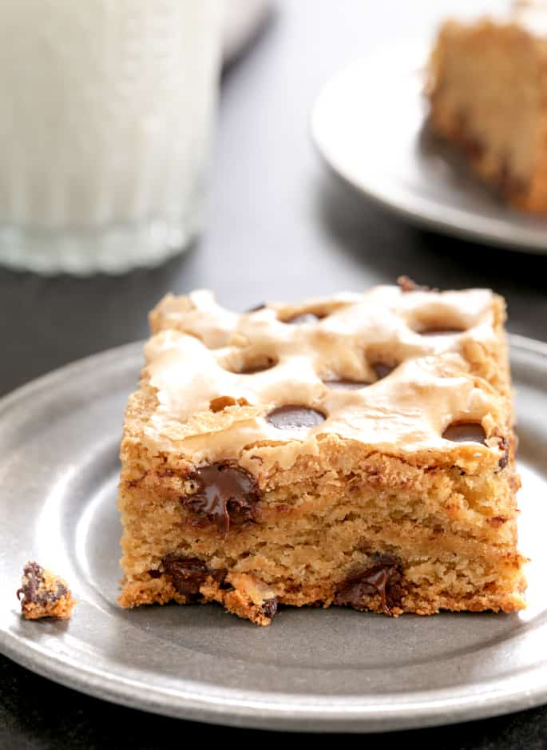

Gluten-Free Magic Cookie Bars

Description:
A gluten-free version of classic magic cookie bars with layers.
Ingredients:
- 2 cups gluten-free graham cracker crumbs.
- ½ cup butter, melted.
- 1 (14 ounce) can sweetened condensed milk.
- 1 (12 ounce) bag semisweet chocolate chips.
- 1 cup shredded coconut.
- ½ cup chopped pecans.
Steps:
STEP 1
- Preheat the oven to 350 degrees F (175 degrees C).
STEP 2
- Mix graham cracker crumbs and melted butter together in a bowl; press into an 8x11-inch glass casserole dish.
Pour condensed milk evenly over the crust.
Sprinkle chocolate chips, coconut, and pecans evenly on top and press down.
STEP 3
- Bake in the preheated oven until edges are golden, 25 to 30 minutes. Let cool before cutting.